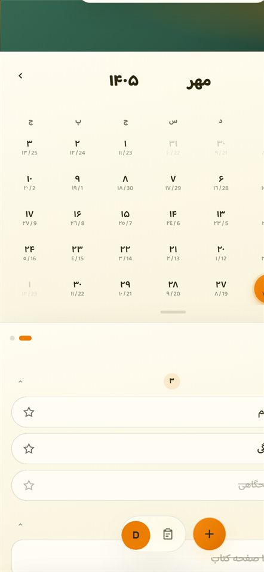
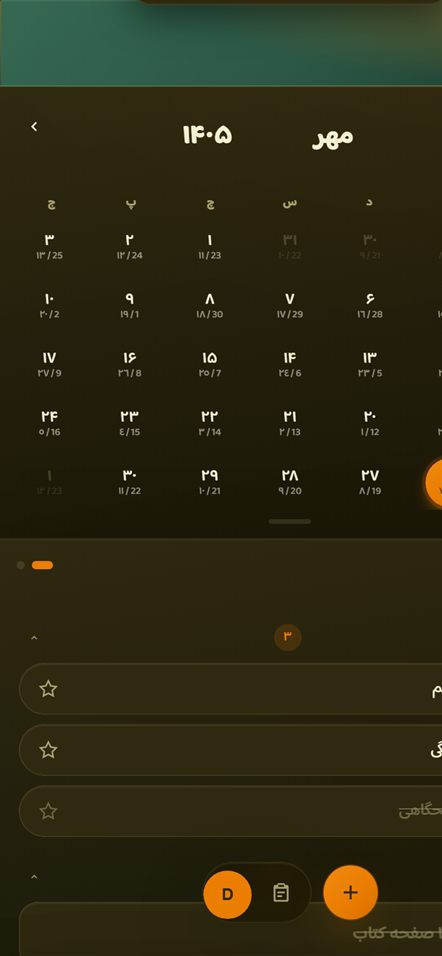
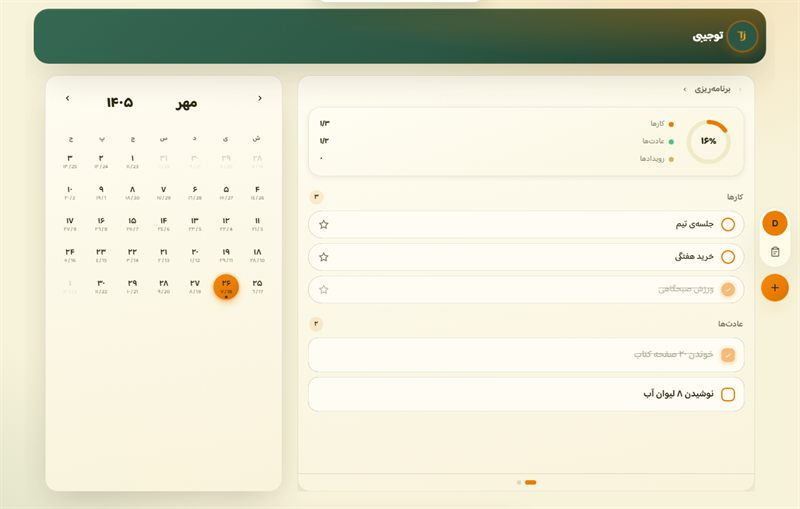
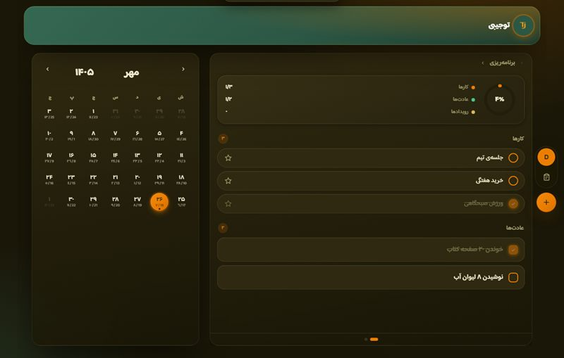

تقویم؛ برای روزهای پیش رو
روزها، تاریخها و مناسبتهات رو دنبال کن و همیشه دید بهتری نسبت به زمانت داشته باش.
تقویم رو ببیناز برنامههای روزانه تا عادتهایی که میخوای بسازی؛ توجیبی کمکت میکنه روزهات رو به سبک خودت پیش ببری.


روزها، تاریخها و مناسبتهات رو دنبال کن و همیشه دید بهتری نسبت به زمانت داشته باش.
تقویم رو ببینکارهات رو بنویس، برای روزهات برنامه بچین و قدمبهقدم پیش برو.
برنامهریزی کنعادتهایی که برات مهمن ثبت کن و مسیر پیشرفتت رو دنبال کن.
عادتهاملازم نیست همهچیز رو یکجا تغییر بدی. از تقویمت شروع کن، کارهات رو ثبت کن و کمکم روال روزانهای بساز که بهت میاد.


یه جای ساده برای برنامههات، کارهات و چیزهایی که برات مهمن.